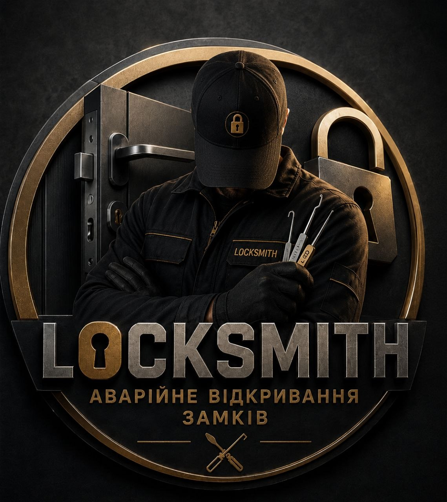

Тернопіль та Тернопільська область
Відкривання дверей, автомобілів, сейфів, гаражів та ролет
Квартири, будинки, офіси.
Будь-які марки авто.
Професійно та швидко.
Заміна та ремонт замків.
Без пошкодження дверей.
Відкривання будь-якої складності.
Акуратно дістанемо уламок ключа із замка.
Відкриємо без пошкодження.
Ремонт або заміна замка.
Допоможемо потрапити в приміщення.
Аварійне відкривання автомобілів.
Заміна серцевин та механізмів.
Швидке та професійне відкривання.
📞 Телефон: 097 938 52 32
📍 Місто: Тернопіль
🌍 Обслуговування: Тернопіль та Тернопільська область
Подзвонити зараз